http://127.0.0.1:8188.Make sure the Manager button is visible in the toolbar on the right.
Bookmark this address for easy access in the future.

DOWNLOAD 7-ZIPGo to 7-Zip.org. | 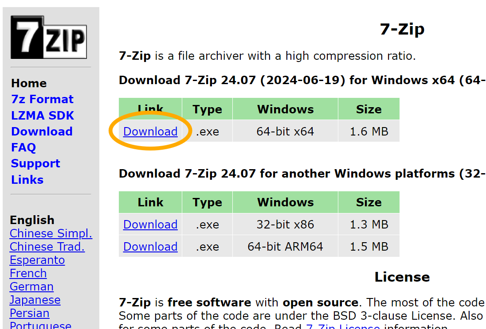 |
RUN THE 7-ZIP INSTALLERLocate the download and run the 7-Zip installer. | 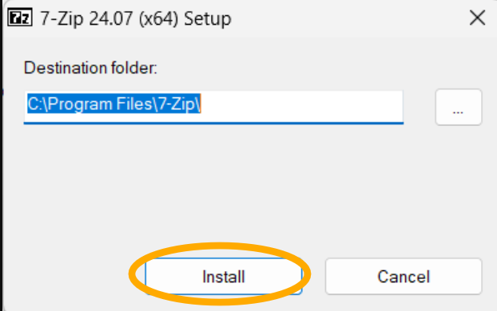 |
CREATE AN EMPTY COMFYUI DIRECTORYIn a File Explorer, create a New Folder at
| 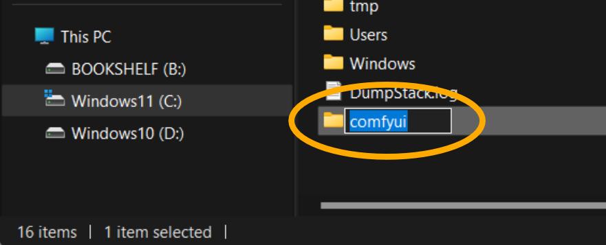 |
Plan for enough disk space! ComfyUI (including AI models required for this tutorial) uses about 70GB of disk space.
If you don't want to install on your C:\ drive, choose an install directory close to the root
folder of your desired disk (for example: D:\comfyui\). Very long file paths can
break Python on Windows.
DOWNLOAD COMFYUIIn a web browser, go to the ComfyUI GitHub Release Page.
| 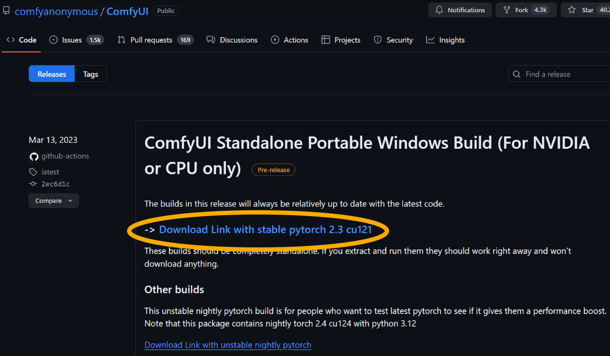 |
EXTRACT THE COMFYUI ARCHIVEIn a File Explorer, locate the ComfyUI .7z file.
| 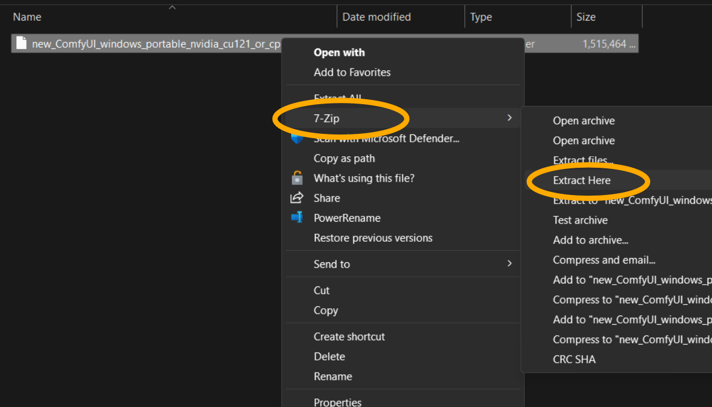 |
The ComfyUI archive (inlcuding a self-contained Python 3.11 environment) is extracted to C:\comfyui\ComfyUI_windows_portable_nvidia_cu121_or_cpu\.
After extracting the contents of the archive, you can move the ComfyUI .7z file to the Recycle Bin if you wish.
ComfyUI_windows_portable_nvidia_cu121_or_cpu folder to portable.
The ComfyUI self-contained installation is now located at C:\comfyui\portable\.
DOWNLOAD THE COMFYUI MANAGERIn a Web Browser, go to the
| 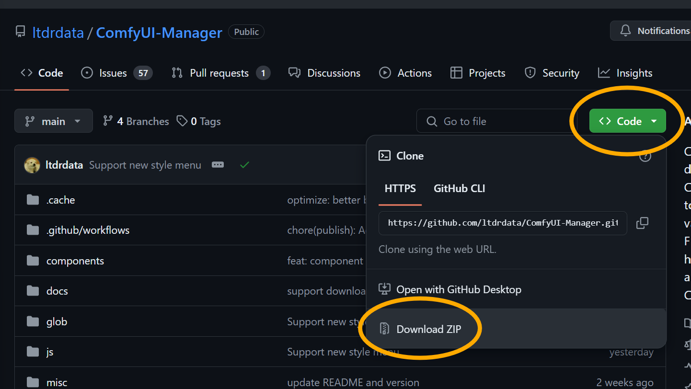 |
EXTRACT THE COMFYUI-MANAGER ARCHIVEIn a File Explorer,
| 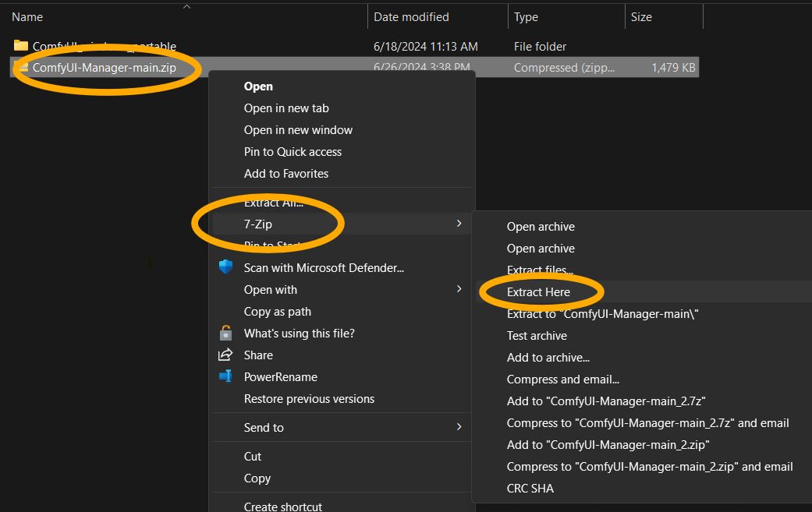 |
MOVE COMFYUI-MANAGER TO 'CUSTOM NODES'In a second File Explorer.
Navigate to
| 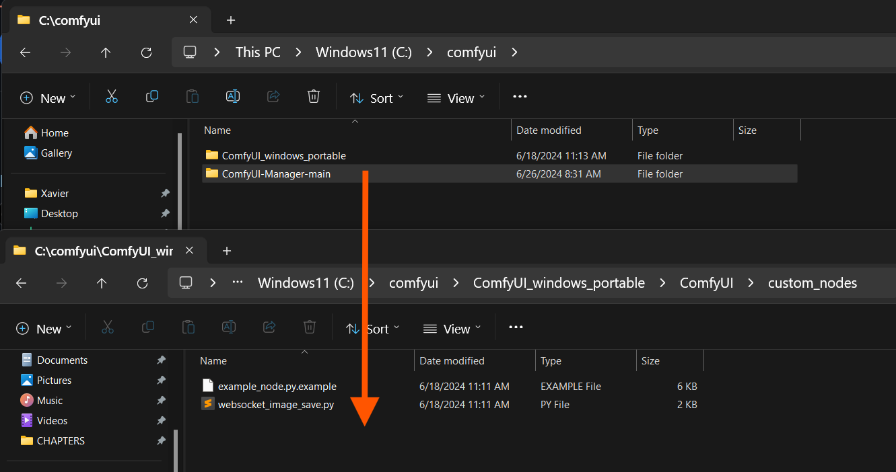 |
START THE COMFYUI SERVERIn a File Explorer, navigate to
| 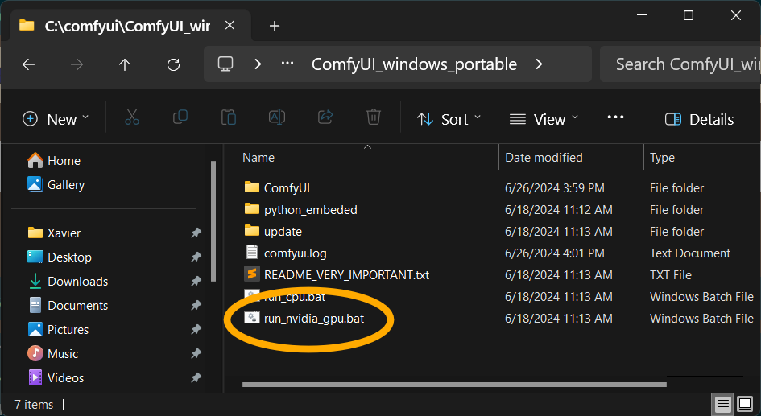 |
If you do not have a supported GPU, you can run ComfyUI in (slow!) CPU mode with run_cpu.bat instead.
The ComfyUI server starts in a new Command Prompt window. 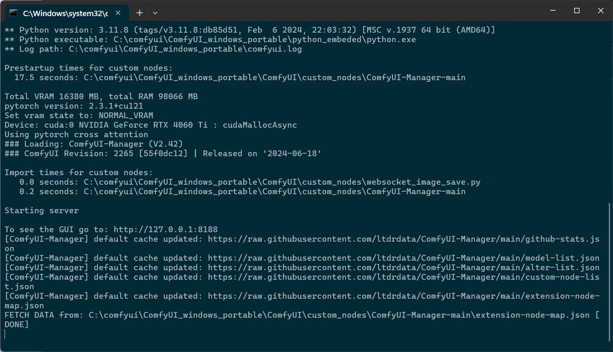
A new web browser window opens and navigates automatically to http://127.0.0.1:8188.
Make sure the Manager button is visible in the toolbar on the right.
Bookmark this address for easy access in the future.
To shutdown the ComfyUI server, simply close the Command Prompt window.
(Don't shut it down yet, we still have a few things to configure!)
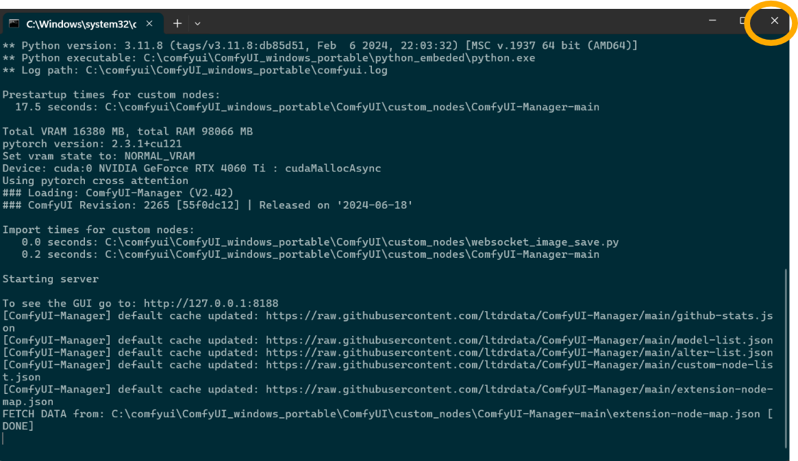
Yes. The ComfyUI interface is up and running on my computer.